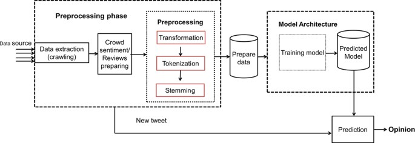
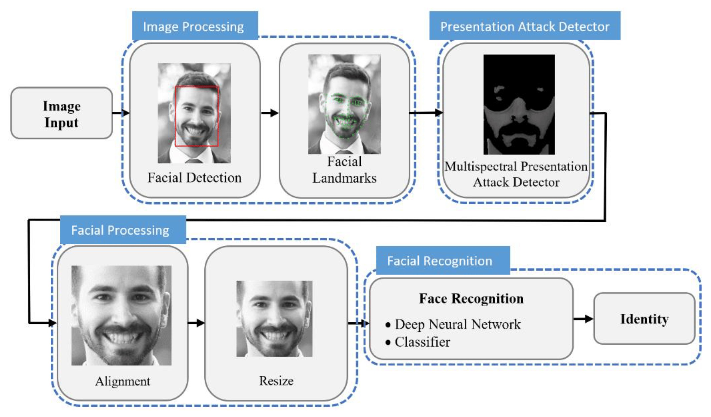

A face detection project typically invoolves using computer vision techniques to identify and locate human faces within images or videos
This project aims to forecast the outcomes of political elections,typically based on historical data,polling information and various predictive models.
List your skills here.